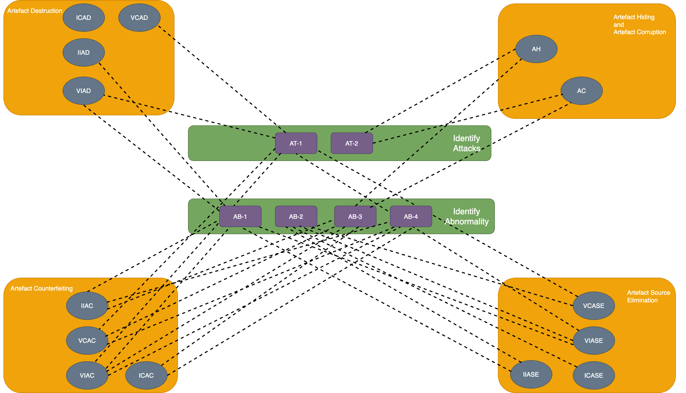
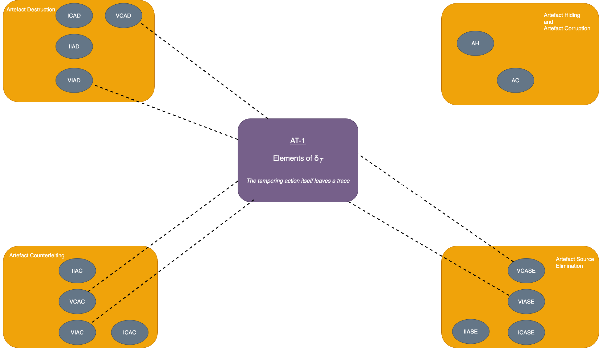
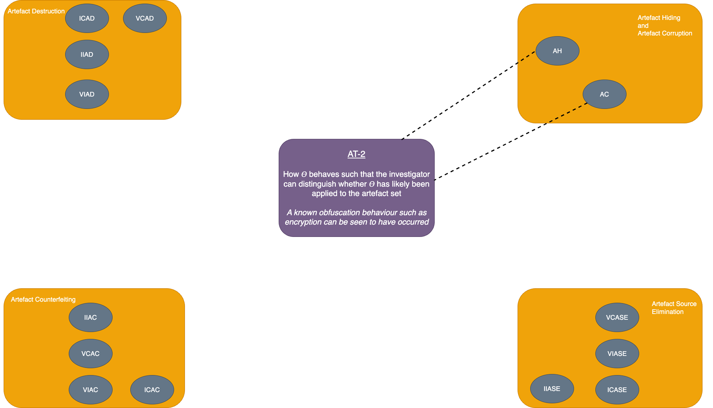
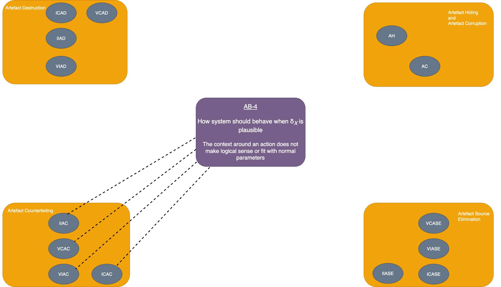

Tampering
Chris Neale PhD Project
Chris Neale PhD Project
We are currently in the process of submitting a paper which describes a means by which tampering can be modelled as an action. If and when this work is published, we will provide a link here. We don't attempt to try and provide a comprehensive overview of it in this format, you need to read the paper when it is eventually available. However, there is some information which is often too verbose to include in such publications which have space limitations and so we provide a reference resource below.
The first of these is a table which outlines two things for the 14 types of tampering we identify and define in our model. First, it shows the difference in a system execution between if the tampering occurs and if it doesn't. Secondly, it shows the knowledge an investigator would need regarding that system in order to detect this.
| Type of tampering action t | Difference between 𝜛 and 𝜛' | Knowledge Required | Real-world explanation |
|---|---|---|---|
| Invisible complete artefact destruction (ICAD) | None | N/A | N/A |
| Visible complete artefact destruction (VCAD) | Elements of δT in the artefact set | Elements of δT | The tampering action itself leaves a trace |
| Invisible incomplete artefact destruction (IIAD) | Elements of δX in artefact set | Elements of δX which appear in artefact set out of place (i.e. without the whole of δX) | Some action can be inferred but only some of the expected traces can be found |
| Visible incomplete artefact destruction (VIAD) | Elements of δT in the artefact set OR Elements of δX in artefact set |
Elements of δT OR Elements of δX which appear in artefact set out of place (i.e. without the whole of δX) |
The tampering action itself leaves a trace OR Some action can be inferred but only some of the expected traces can be found |
| Invisible complete artefact source elimination (ICASE) | 𝘈s̅ |𝜛 > |𝘈s̅ |𝜛' | Whether |𝘈s̅ | is within expected bounds for a given execution | Less artefacts are present than would be expected |
| Visible complete artefact source elimination (VCASE) | Elements of δT in the artefact set OR 𝘈s̅ |𝜛 > |𝘈s̅ |𝜛' |
Elements of δT OR Whether |𝘈s̅ | is within expected bounds for a given execution |
The tampering action itself leaves a trace OR Less artefacts are present than would be expected |
| Invisible incomplete artefact source elimination (IIASE) | Elements of δX in the artefact set OR 𝘈s̅ |𝜛 > |𝘈s̅ |𝜛' |
Elements of δX, especially those which occur out of place (i.e. without the whole of δX)
OR Whether |𝘈s̅ | is within expected bounds for a given execution |
Some action can be inferred but only some of the expected traces can be found OR Less artefacts are present than would be expected |
| Visible incomplete artefact source elimination (VIASE) | Elements of δT in the artefact set OR Elements of δX in the artefact set OR 𝘈s̅ |𝜛 > |𝘈s̅ |𝜛' |
Elements of δT OR Elements of δX, especially those which occur out of place (i.e. without the whole of δX) OR Whether |𝘈s̅ | is within expected bounds for a given execution |
The tampering action itself leaves a trace OR Some action can be inferred but only some of the expected traces can be found OR Less artefacts are present than would be expected |
| Artefact hiding (AH) | Artefact set has been transformed by 𝛳 | How 𝛳 behaves such that the investigator can distinguish whether 𝛳 has likely been applied to the artefact set OR Whether artefacts are constructed correctly in the artefact set |
A known obfuscation behaviour such as encryption can be found to have occurred |
| Artefact corruption (AC) | Artefact set has been transformed by 𝛳 and as a result, one or more elements of the artefact are not properly constructed | How 𝛳 behaves such that the investigator can distinguish whether 𝛳 has likely been applied to the artefact set OR Whether artefacts are constructed correctly in the artefact set |
A known obfuscation behaviour such as encryption can be found to have occurred OR Artefacts have a form that indicates they were not created as part of normal operation |
| Invisible complete artefact counterfeiting (ICAC) | Elements of δX occur in implausible locations OR Elements of δX not correctly formed |
How system should behave when δX is plausible OR Whether artefacts are constructed correctly in the artefact set |
The context around an action does not make logical sense or fit with normal parameters OR Artefacts have a form that indicates they were not created as part of normal operation |
| Visible complete artefact counterfeiting (VCAC) | Elements of δT in the artefact set OR Elements of δX occur in implausible locations OR Elements of δX not correctly formed |
Elements of δT OR How system should behave when δX is plausible OR Whether artefacts are constructed correctly in the artefact set |
The tampering action itself leaves a trace OR The context around an action does not make logical sense or fit with normal parameters OR Artefacts have a form that indicates they were not created as part of normal operation |
| Invisible incomplete artefact counterfeiting (IIAC) | Elements of δX occur in implausible locations OR Elements of δX not correctly formed OR Not all elements of δa are present in the artefact set |
How system should behave when δX is plausible OR Whether artefacts are constructed correctly in the artefact set OR Elements of δX which appear in artefact set out of place (i.e. without the whole of δX) |
The context around an action does not make logical sense or fit with normal parameters OR Artefacts have a form that indicates they were not created as part of normal operation OR Some action can be inferred but only some of the expected traces can be found |
| Visible incomplete artefact counterfeiting (VIAC) | Elements of δT in the artefact set OR Elements of δX occur in implausible locations OR Elements of δX not correctly formed OR Not all elements of δX are present in the artefact set |
Elements of δT OR How system should behave when δX is plausible OR Whether artefacts are constructed correctly in the artefact set OR Elements of δX which appear in artefact set out of place (i.e. without the whole of δX) |
The tampering action itself leaves a trace OR The context around an action does not make logical sense or fit with normal parameters OR Artefacts have a form that indicates they were not created as part of normal operation OR Some action can be inferred but only some of the expected traces can be found |
This is summarised into the following knowledge codes for identifying tampering, shown in the next table and illustrated in the various images below.
| AT Identifying attacks | AB Identifying abnormality |
|---|---|
| AT-1 Elements of δT | AB-1 Elements of δX which appear in artefact set out of place (i.e. without the whole of δX) |
| AT-2 How 𝛳 behaves such that the investigator can distinguish whether 𝛳 has likely been applied to the artefact set | AB-2 Whether |𝘈s̅ | is within expected bounds for a given execution |
| AB-3 Whether artefacts are constructed correctly in the artefact set | |
| AB-4 How system should behave when δX is plausible |



